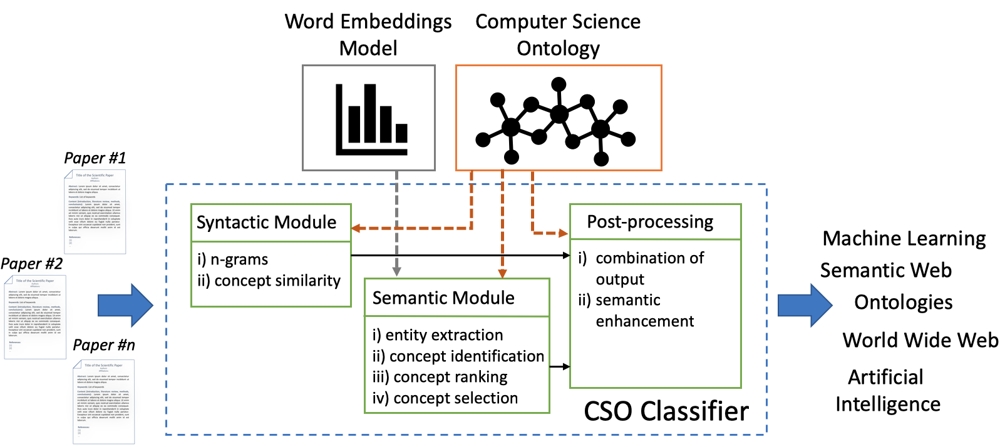

Classifying research papers according to their research topics is an important task to improve their retrievability, assist the creation of smart analytics, and support a variety of approaches for analysing and making sense of the research environment. In this paper, we present the CSO Classifier, a new unsupervised approach for automatically classifying research papers according to the Computer Science Ontology (CSO), a comprehensive ontology of research areas in the field of Computer Science. The CSO Classifier takes as input the metadata associated with a research paper (title, abstract, keywords) and returns a selection of research concepts drawn from the ontology. The approach was evaluated on a gold standard of manually annotated articles yielding a significant improvement over alternative methods.
The CSO Classifier is a novel application that takes as input the text from abstract, title, and keywords of a research paper and outputs a list of relevant concepts from CSO. It consists of two main components: (i) the syntactic module and (ii) the semantic module. Figure 1 depicts its architecture. The syntactic module parses the input documents and identifies CSO concepts that are explicitly referred in the document. The semantic module uses part-of-speech tagging to identify promising terms and then exploits word embeddings to infer semantically related topics. Finally, the CSO Classifier combines the results of these two modules and enhances them by including relevant super-areas.

We built our gold standard by asking 21 domain experts to classify 70 papers in terms of topics drawn from the CSO ontology.
We queried the MAG dataset and selected the 70 most cited papers published in 2007-2017 within the fields of “Semantic Web”, “Natural Language Processing”, and “Data Mining”. We then contacted 21 researchers in these fields at various level of seniority and asked each of them to annotate 10 of these papers. We structured the data collection in order to have each paper annotated by at least three experts, using majority vote to address disagreements. The papers were randomly assigned to experts, while minimising the number of shared papers between each pair of experts.
The Gold Standard is JSON file containing a dictionary of 70 items (papers). Each item has a 32 alphanumerical characters key representing the id of the paper and its value is also a dictionary structured as showed in Table 1.
| Key | Type | Info |
|---|---|---|
"doi" | string | DOI of the paper |
"title" | string | title of the paper |
"abstract" | string | abstract of the paper |
"keywords" | list | author keywords |
"doc_type" | string | type of document, it identifies whether it is a conference paper, or journal, or others |
"topics" | list | Fields of Science identified by Microsoft Academic Graph. This information is not used during the process of classification. |
"source" | string | Source topic, whether it comes form the field of “Semantic Web”, “Natural Language Processing”, or “Data Mining” |
"citations" | numerical | Number of citation at time of download |
"gold_standard" | dictionary | object containing the information obtained by the experts and the generated gold standard ( specifications) |
"cso_output" | dictionary | object containing the output of the CSO Classifier ( specifications) |
| Key | Type | Info |
|---|---|---|
"relevant_rater_A" | list | relevant topics selected by the first expert during the annotation process |
"relevant_rater_B" | list | relevant topics selected by the second expert during the annotation process |
"relevant_rater_C" | list | relevant topics selected by the third expert during the annotation process |
"majority_vote" | list | set of topics selected using the majority vote approach over the relevant topics chosed by the experts |
"enhancement_majority_vote" | list | set of enhanced topics of the majority vote set |
| Key | Type | Info |
|---|---|---|
"syntactic" | list | list of topics returned by the syntactic module |
"semantic" | list | list of topics returned by the semantic module |
"enhancement" | list | list of enhanced topics from the union of the result of semantic and syntactic module |
"final" | list | final set of topics from the CSO Classifier |
The Python implementation of the CSO Classifier is available through our Github repository.
Go to Github repoWe applied the word2vec approach to a collection of text from the Microsoft Academic Graph (MAG) for generating word embeddings. We first downloaded titles, and abstracts of 4,654,062 English papers in the field of Computer Science. Then we pre-processed the data by replacing spaces with underscores in all n-grams matching the CSO topic labels (e.g., “digital libraries” became “digital_libraries”) and for frequent bigrams and trigrams (e.g., “highest_accuracies”, “highly_cited_journals”). Finally, we trained the word2vec model using the parameters provided in the following table. The parameters were set to these values after testing several combinations.
| Parameter | Value |
|---|---|
method | skipgram |
embedding size | 128 |
window size | 10 |
negative | 5 |
max iteration | 5 |
min-count cutoff | 10 |